日本フィジカルAI新聞
https://physicalainews.jp
フィジカルAI(ロボット基盤モデル)の世界の動きを日本語で追う専門紙。ニュース・企業DB・Robot DB・論文・入札公募・イベント。
フィード
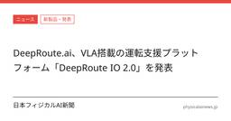
DeepRoute.ai、VLA搭載の運転支援プラットフォーム「DeepRoute IO 2.0」を発表
日本フィジカルAI新聞
prnewswire.comは2025年8月26日、「DeepRoute.ai、VLA搭載の運転支援プラットフォーム「DeepRoute IO 2.0」を発表」と報じた。
2時間前
TeslaのOptimus生産問題、NeoTeoが報じる
日本フィジカルAI新聞
Teslaのヒト型ロボット「Optimus」をめぐり、生産上の問題が報じられた。主ソースは2026年9月26日掲載のNeoTeo記事で、量産局面でのつまずきが主題である。詳細は原典確認が必要である。
2時間前
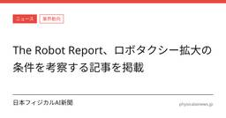
The Robot Report、ロボタクシー拡大の条件を考察する記事を掲載
日本フィジカルAI新聞
The Robot Reportは、ロボタクシーを大規模に広げるために必要な条件を扱う記事を掲載した。記事は、運行規模の拡大に向けた課題として充電や整備などの周辺業務に触れている。掲載日は2026年9月26日。
2時間前
IDTechEx調査、ヒューマノイド設計の約8割が産業用途
日本フィジカルAI新聞
humanoid.guideは2026年9月26日、「IDTechEx調査、ヒューマノイド設計の約8割が産業用途」と報じた。
6時間前
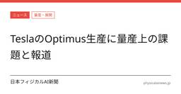
TeslaのOptimus生産に量産上の課題と報道
日本フィジカルAI新聞
tbreak.comが2026年9月26日、Teslaのヒト型ロボット「Optimus」の生産が量産拡大の局面で課題に直面していると報じた。公開情報の範囲では、今回の記事は生産面の具体的なつまずきを示す報道であり、詳細は原典確認が必要である。本紙の既報では手の量産や部品供給網が焦点になっており、量産の難所が可動部から供給網へ連続している構図が見える。
6時間前
China Mobile、ヒューマノイド制御ソフトOpen-RAILを報道
日本フィジカルAI新聞
humanoid.guideが9月26日、China MobileがOpen-RAILを公開したと報じた。
9時間前
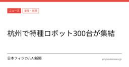
杭州で特種機器人300台超が展示
日本フィジカルAI新聞
9月20日、杭州余杭で「智竞未来」首届智能機器人応用技能大展浙江站が始まったと、leaderobot.comが報じた。記事では300余台のロボットが集まったとしている。
9時間前
IndexBox、AI手術ロボット市場の2035年までの拡大を予測
日本フィジカルAI新聞
IndexBoxは、AI手術ロボット市場が2026年から2035年にかけて拡大すると報告した。市場拡大の主因として、外科医不足が挙げられた。
11時間前
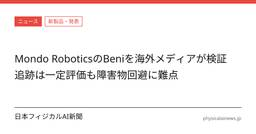
Mondo RoboticsのBeniを海外メディアが検証 追跡は一定評価も障害物回避に難点
日本フィジカルAI新聞
海外メディアleaderobot.comは、Mondo Roboticsの小型双足ロボット「Beni」を数週間試した結果として、走行追跡や自立復帰は一定の評価に値する一方、障害物回避は大きな弱点だと報じた。
11時間前
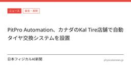
PitPro Automation、カナダのKal Tire店舗で自動タイヤ交換システムを設置
日本フィジカルAI新聞
PitPro Automationが、カナダ・カルガリーのKal Tire店舗に初のロボットシステムを設置したと報じられた。システムは2台の箱型ロボットで構成され、タイヤ交換を約15分でこなすとされる。本件は、タイヤ交換の自動化をめぐる実装段階に入った動きとして読める。
11時間前
Zoox、ラスベガスの台数上限が失効
日本フィジカルAI新聞
報道によると、Amazon傘下のZooxが米ネバダ州ラスベガスで展開する自動運転ロボタクシーの最大100台という台数制限が、9月25日の期限到来で失効した。
12時間前
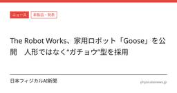
The Robot Works、家用ロボット「Goose」を公開 人形ではなく“ガチョウ”型を採用
日本フィジカルAI新聞
The Robot Worksが家用ロボット「Goose」を公開した。報道によると、人形型ではなく、低い底部と長い首を備えた形状を採用したという。同社は家庭内での整理、遊び、生活を想定しているとされる。詳細な設計意図や開発の位置づけは、原典を参照する必要がある。
13時間前
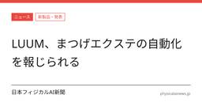
LUUM、ロボットとAIでまつげエクステを自動化
日本フィジカルAI新聞
米カリフォルニア州のLUUMは、ロボットとAIを使ってまつげエクステの施術を自動化するサービスを展開していると、leaderobot.comが報じた。
13時間前
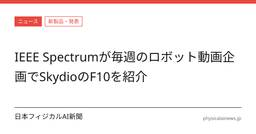
IEEE Spectrumが毎週のロボット動画企画でSkydioのF10を紹介
日本フィジカルAI新聞
leaderobot.comは2026年9月26日、「IEEE Spectrumが毎週のロボット動画企画でSkydioのF10を紹介」と報じた。
13時間前
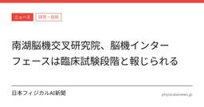
南湖脳機交叉研究院、脳機インターフェースは臨床試験段階と報じられる
日本フィジカルAI新聞
leaderobot.comは2026年9月26日、南湖脳機交叉研究院に関する記事を掲載した。記事は、脳機インターフェースが一般患者に届くまでの距離と、段樹民氏の見方を伝えている。原典はインタビュー記事であり、詳細は原典を参照されたい。
13時間前
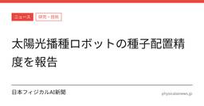
太陽光播種ロボットの種子配置精度を報告
日本フィジカルAI新聞
leaderobot.comは、太陽光で動く播種ロボットの種子配置精度を報じた。記事では、試験条件下で98.08%から98.80%の精度が示されたとしている。
14時間前
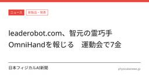
leaderobot.com、智元の霊巧手OmniHandを報じる 運動会で7金
日本フィジカルAI新聞
leaderobot.comは2026年9月26日、「leaderobot.com、智元の霊巧手OmniHandを報じる 運動会で7金」と報じた。
14時間前
36Kr、Qunhe・Baidu・JDの具身AIデータ基盤を報道
日本フィジカルAI新聞
36Krが2026年4月24日、Qunhe、Baidu、JDに関する具身AIデータの取り組みを報じた。主題は、Qunheが訓練用の場をつくり、Baiduがパイプラインを敷き、JDが舞台を整えるという整理である。詳細は原典を参照する必要があり、公開情報だけでは各社の具体的な役割分担や規模は確定しない。
15時間前
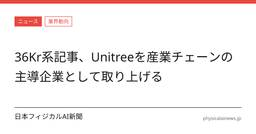
36Kr系記事、Unitreeを産業チェーンの主導企業として取り上げる
日本フィジカルAI新聞
36Kr系の報道が、Unitreeを「産業チェーンの主導企業」と位置づけて取り上げた。主題は、ヒューマノイドロボットの技術成熟と量産普及をどう進めるかにある。詳細は原典を参照する必要があり、本文では報道された事実の範囲にとどめる。
15時間前
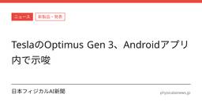
TeslaのAndroidアプリでOptimus Gen 3のデザイン示唆か
日本フィジカルAI新聞
TeslaのAndroidアプリ内に、未発表とみられるヒト型ロボット「Optimus Gen 3」のアセットが見つかったと報じられた。
15時間前
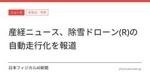
除雪ドローンが「ラジコン操作」から自動走行へ進化と産経ニュースが報道
日本フィジカルAI新聞
産経ニュースは2026年9月24日、除雪ドローン(R)が「ラジコン操作」から「自動走行」へ進化したと報じた。主題は操作方法の変化であり、記事本文の抜粋からは具体的な性能値や導入規模は確認できない。本件は実証や開発の段階変化を示す報道として読むのが妥当である。
15時間前
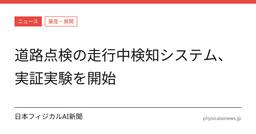
道路点検の走行中検知システム、実証実験を開始
日本フィジカルAI新聞
道路点検の担い手不足を見据え、走行しながら損傷などを自動検知するシステムの実証実験が始まった。報道によると、走行中に検知する方式を採る点が特徴で、点検業務の省力化を狙う動きだ。詳細は原典を参照されたい。
18時間前
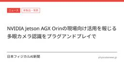
NVIDIA Jetson AGX Orinの現場向け活用を報じる 多眼カメラ認識をプラグアンドプレイで
日本フィジカルAI新聞
sankei.comが、NVIDIA Jetson AGX Orinを現場にそのまま持ち込む多眼カメラのAI認識について報じた。原典はインタビュー/コラムであり、発言や論旨の詳細は本稿では踏み込まない。詳細は原典を参照しつつ、公開情報の範囲で位置づけを読む必要がある。
18時間前
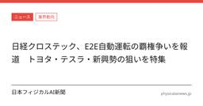
日経クロステック、E2E自動運転の覇権争いを報道 トヨタ・テスラ・新興勢の狙いを特集
日本フィジカルAI新聞
日経クロステックが2026年9月25日、E2E自動運転の覇権争いをテーマにした記事を掲載した。見出しではトヨタ、テスラ、新興勢の狙いを並べ、チューリングの山本CEOの発言も取り上げている。詳細は原典を参照する必要がある。
18時間前
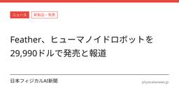
Feather、ヒューマノイドロボットを29,990ドルで発売と報道
日本フィジカルAI新聞
Featherがヒューマノイドロボットを29,990ドルで発売したと報じられた。原典は報道記事であり、発言や詳細仕様の一次情報は本文抜粋から確認できない。焦点は、低価格を前面に出したヒューマノイドの商用化がどこまで現実的かに移る。
18時間前
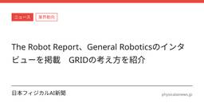
The Robot Report、General Roboticsのインタビューを掲載 GRIDの考え方を紹介
日本フィジカルAI新聞
The Robot Reportは2026年9月25日、General RoboticsのCTO、Sai Vemprala氏へのインタビュー記事を掲載した。記事は、同社が単一の「ロボット脳」ではなく、モジュール型の知能を重視している点を取り上げた。詳細な発言内容は原典を参照されたい。
20時間前
Amazon、インディアナ州グリーンウッドに製造施設へ1億ドル超投資
日本フィジカルAI新聞
Amazonはインディアナ州グリーンウッドで、1億ドル超を投じる585,000平方フィートの先端製造施設を整備する。
20時間前